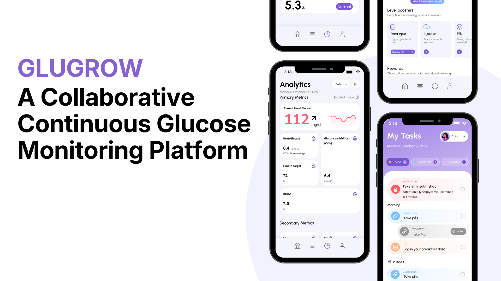
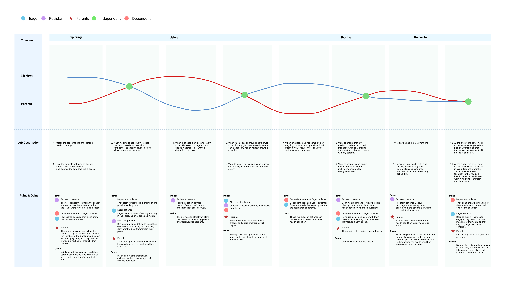
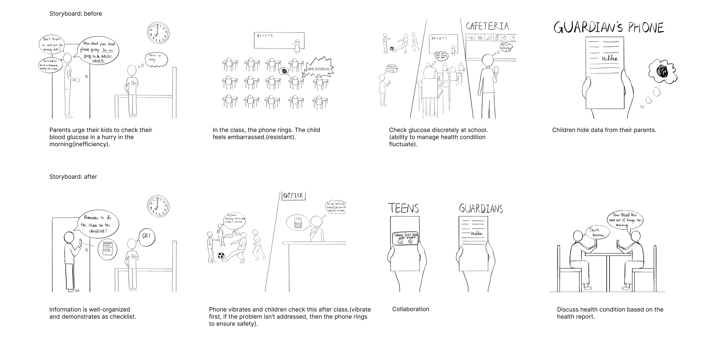
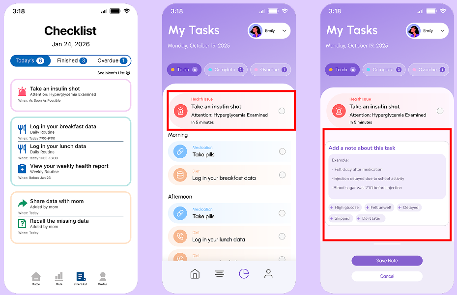
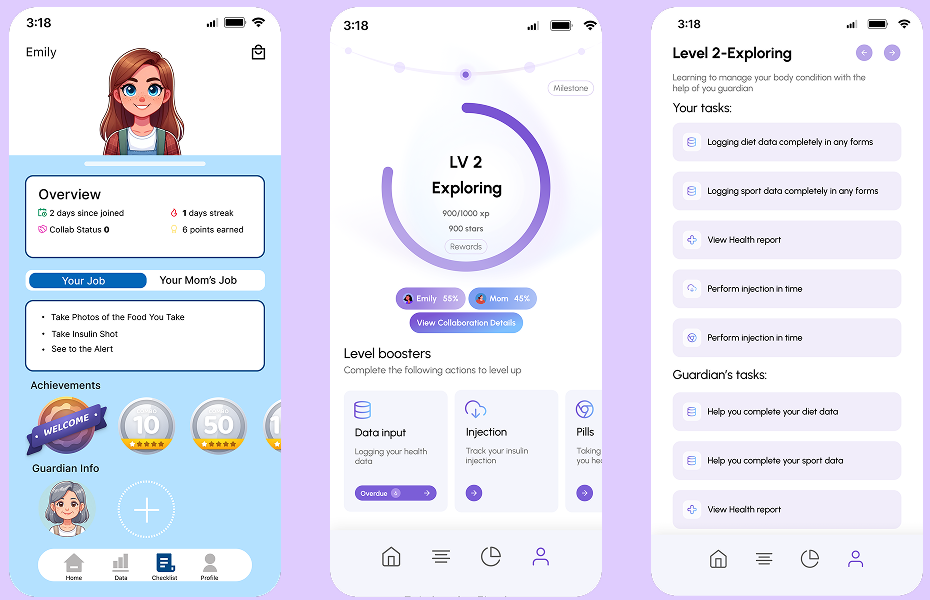
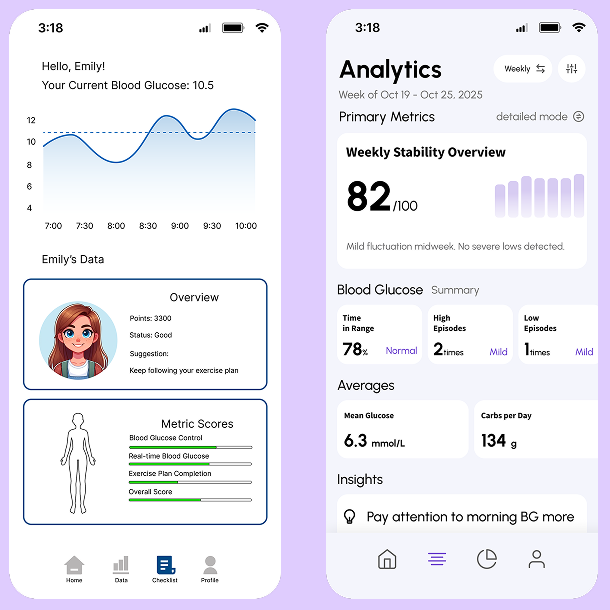
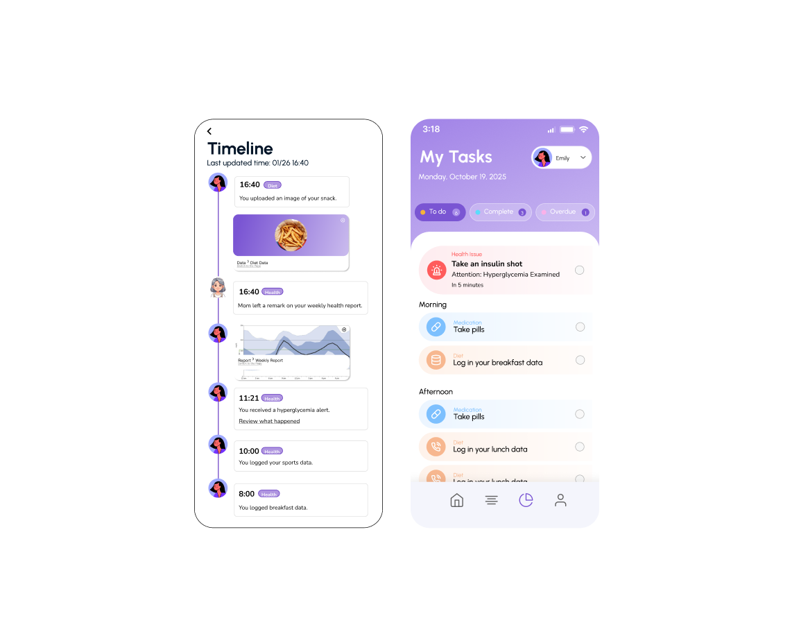

1. Parental Burden
It takes parents a lot of time and effort to check their children’s data, causing inefficiency.

Developed from research conducted during my lab internship, GluGrow is a growth-oriented CGM system that helps teens with Type 1 Diabetes build sustainable self-management habits through real-time monitoring, behavioral nudges, and collaborative support, fostering confidence and accountability while reducing cognitive load.
Through my research at the U-M School of Information, I found that Type 1 Diabetes management requires ongoing collaboration between young patients and their parents. Yet their needs often conflict: parents need visibility and reassurance, while young patients need independence and autonomy.
When responsibilities and communication are unclear, parents may become anxious, while young patients may struggle to manage their health consistently.
“On weekdays, I have to go to work and she has to go to school. How am I supposed to take care of her when I’m not there?”— Mother of a 10-year-old patient
How might we support effective collaboration between adolescents with T1D and their parents while fostering the child’s independence in daily diabetes management?
My research challenged a common assumption about Type 1 Diabetes management: providing more health data does not necessarily make young patients or their parents feel more confident or in control.
While CGM systems make glucose levels continuously visible, families still have to interpret changing patterns, assess risks, and decide when action is necessary. The challenge is not simply accessing information, but making sense of it while navigating uncertainty and shared responsibility.


It takes parents a lot of time and effort to check their children’s data, causing inefficiency.
Collaboration between patients and their parents is non-linear and situational, because children’s ability to manage their health condition often fluctuates.
Lack of healthy collaboration between parents and children can lead to a trust crisis.
#1
Personalized onboarding translates each patient’s care needs into a tailored daily checklist, helping adolescents take ownership of daily management while keeping parents informed of their progress.


#2
Milestones make long-term progress visible, while rewards provide positive reinforcement for completing care tasks—helping adolescents stay engaged and build consistent self-management habits over time.
#3
Simplified and detailed analytics views let users choose the level of information they need, helping them understand health trends without being overwhelmed by unnecessary data.

#1
Problem
Patients often lack clear daily responsibilities, while parents must repeatedly check progress and remind them what to do.
Design Solution
A structured task system organizes personalized responsibilities, helping teens manage daily care independently while giving parents visibility into their progress.
Why I redesigned it
The original checklist made tasks difficult to prioritize. I reorganized them by time and priority, with expandable details and contextual notes to support independent management.

#2
Problem
Daily diabetes management can feel repetitive, making it difficult for adolescents to stay motivated and maintain healthy routines over time.
Design Solution
A gamified progression system uses milestones and shared achievements to make long-term progress visible and reinforce consistent self-management.
Why I redesigned it
The original design showed rewards without a clear sense of progression. I unified them into a level-based system with milestones and shared goals to make progress more visible and motivating.

#3
Problem
Parents and adolescents may need different levels of health information. When data lacks clear context, it can create uncertainty and tension in how they manage care together.
Design Solution
Flexible analytics provide simplified or detailed health insights based on each user’s needs, helping families build shared understanding without unnecessary information overload.
Why I redesigned it
The original design showed health metrics with limited context. I added structured insights and flexible detail levels to make health trends easier to understand without overwhelming users.

Context: When collaboration breaks down, parents and adolescents need a way to understand what happened and resolve misunderstandings without increasing monitoring or tension.
Initial Approach: I initially explored a history view so families could trace past actions when collaboration problems occurred.
Trade-off: While history showed what happened, it provided little context for why it happened, making it more useful for reviewing conflicts than preventing them.
Design Decision: I shifted toward contextual notes attached to individual tasks, allowing adolescents to explain exceptions as they happen and helping caregivers understand the situation without repeated follow-ups.

I conducted an initial usability test to evaluate whether the redesigned checklist, progression system, and analytics improved clarity and usability.
This project changed my assumption that more health data leads to better decision-making; confidence comes from making information understandable and actionable.
I learned that designing for chronic care means supporting changing roles and responsibilities, rather than assuming one fixed pattern of parent–teen collaboration.
If I had a second chance, I would explore how the checklist could better facilitate communication between patients and caregivers.